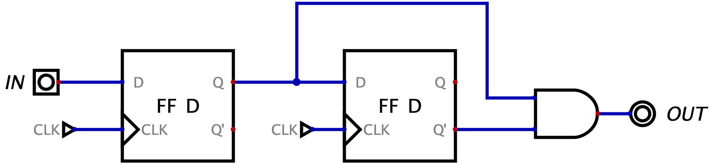

Definizione - Monoimpulsore
Un monoimpulsore (detto anche "edge detector", ovvero rilevatore dei fronti di salita) è una rete logica sincrona che emette in uscita un segnale alto, per un solo ciclo di clock, nel ciclo di clock successivo al fronte di salita dell'ingresso (ovvero passaggio da \( IN=0\) a \( IN=1\)). L'ingresso, che può essere anche asincrono, deve avere una frequenza di aggiornamento inferiore a quella del clock. Nel caso che il fronte di salita capiti nell'intervallo "tempo di setup"-"tempo di hold" (ovvero è molto vicino al fronte del clock), è accettabile segnalare il fronte con più di un clock di ritardo (a causa della metastabilità).
Un possibile montaggio della rete è il seguente: Con questo montaggio, si ha che nel caso non si rispettino i tempi del flip-flop, si avrebbe la metastabilità e il componente potrebbe subire un ritardo di un ciclo di clock.
Nel caso l'uscita \( OUT\) sia utilizzata da una rete di Moore non ci sarebbe alcun problema in quanto gli ingressi sono "sincronizzati" dalla rete.
Per ottenere una rete con meno probabilità di metastabilità è possibile aggiungere un ulteriore flip-flop, al costo però di avere un ritardo sull'aggiornamento dell'uscita.
Un possibile montaggio della rete è il seguente:

Nel caso l'uscita \( OUT\) sia utilizzata da una rete di Moore non ci sarebbe alcun problema in quanto gli ingressi sono "sincronizzati" dalla rete.
Per ottenere una rete con meno probabilità di metastabilità è possibile aggiungere un ulteriore flip-flop, al costo però di avere un ritardo sull'aggiornamento dell'uscita.
Osservazioni personali - Monoimpulsore errato
Il seguente montaggio  non è corretto. Infatti, nel caso \( IN\) fosse uguale a \( 1\) per più cicli di clock consecutivi, si avrebbe un cortocircuito in quanto l'uscita commuterebbe automaticamente più volte.
non è corretto. Infatti, nel caso \( IN\) fosse uguale a \( 1\) per più cicli di clock consecutivi, si avrebbe un cortocircuito in quanto l'uscita commuterebbe automaticamente più volte.